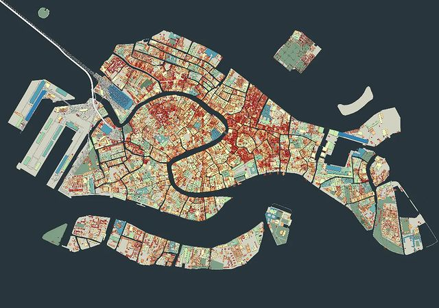

<div class="blurb">
	<h1>A more detailed bio.</h1>
	
	<p>Here are some more details if you're <emph>really</emph> curious about what I do.</p>

        <p>&#x1F4BB; <b>Work</b> I currently work as data scientist scientist at <a href="https://www.infocamere.it/en/">City, InfoCamere</a>, the IT company of the Italian Chambers of Commerce. In pactical terms I carry out planning and project management support for the advanced data analysis unit (10 people approx). I develop machine learning solutions related to the world of Small and Medium Enterprises (SMEs). I support in defining dashboarding and data visualization solutions, from proposal writing to automated quality checks on deployed dashboards.</p> 
		
        <p>&#127891; <b>Education</b> I have a PhD in Health Economics awarded by <a href="https://www.city.ac.uk/about/schools/arts-social-sciences/economics">City, University of London</a>. My research work focused on the economic analysos of antibiotics. Essentially I was estimating the impact of (wise) policies on antibiotics consumption at an individual GPs to derive policy-relevant conclusions. In other terms: lots of econometrics, spatial and counter-factual analysis plus loads of data wrangling in R.</p>
	
        <p>&#x1F916; <b>Tech skills</b> My go-to tools are R for data wrangling and modeling and SQL for data analysis and querying. I use Git (BitBucket) for version control and Tableau for data visualization (when I'm not using ggplot). I still enjoy Excel for budgeting. I know basic Python for analysis and modeling (catching up).</p>
	
        <p>&#x1F525; <b>Passion</b> I'm fired-up by working with research ideas and turning them into practical solutions. I really enjoy talking in public and transmitting complex concepts in simple formats. I love to convey information in written form and convince stakeholders in investing in directions (I believe) might work for customers.</p> 

        <p>&#x1F4D5; <b>Learning</b> One can't simply work into research or technology without a drive for learning. That works well for me as I'm always keen in learning new stuff. I'm currently into deepening my SQL and GIT skills, as well as learning about leadership.</p> 

        <p>&#x1F441; <b>Beliefs</b> I find the term Data Scientist to be extremely confusing. Every data analysis should start with a strong <em>why</em> and with an understanding of the audience. Data analysis should be build around this with solid preliminary exploration and strict reproducibility. If I'll see you applying a random algo library to a dataset without understanding its features first I'll probably bite you.</p>

        <p>&#x1F469;&#x1F476; <b>Personal</b> On a personal note I'm Italian. I live in beautiful Venice. I've lived in London for 5 roaring years, before moving back home. I have one beautiful wife and a mesmerising daughter.</p>

        <p>&#x1F64B; <b>Contact</b> You can reach me at this <a href="mailto:nick.stamboglis@gmail.com">email address</a> if you like.</p>

	
</div><!-- /.blurb -->
